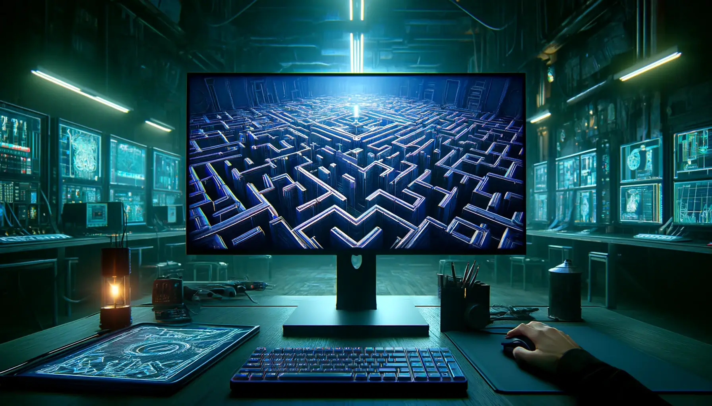

School 42's Cube 3D project is truly amazing. It allowed me to explore advanced concepts in programming, like 3D rendering and matrix transformations, in a very concrete way. I had to demonstrate rigor and problem solving to overcome the technical challenges that presented themselves. This project also gave me a lot of freedom to customize my work and express my creativity in how I implemented the features of the 3D cube. Successfully completing this project really strengthened my portfolio and my confidence in my IT skills. It was an enriching experience that prepared me to take on more complex challenges.
